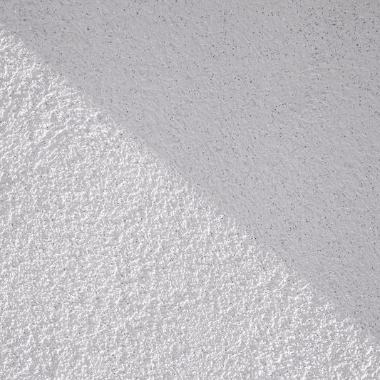
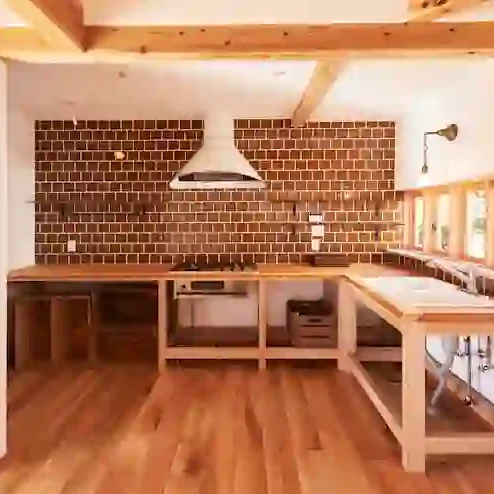
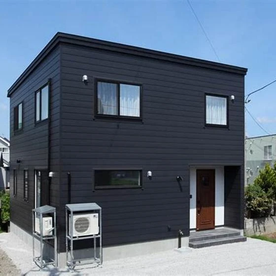

しっくいのひみつ
こんにちは。 富山県で自然素材にこだわった家づくりをしている 「フジ創アイノス」と申します。 呼吸する壁「漆喰」 漆喰とは、、 ・石炭石を加工して、作られる消石灰〈水酸化カルシウム〉に、砂、海藻のり、すさ等を混ぜ、水で練
続きを読む →FUJISOU AINOS JOURNAL
家づくりのこと、暮らしのこと。
日々の想いを、お伝えします。
新しい記事から 12・40ページ

こんにちは。 富山県で自然素材にこだわった家づくりをしている 「フジ創アイノス」と申します。 呼吸する壁「漆喰」 漆喰とは、、 ・石炭石を加工して、作られる消石灰〈水酸化カルシウム〉に、砂、海藻のり、すさ等を混ぜ、水で練
続きを読む →
こんにちは 富山県で自然素材にこだわった家づくりをしている 「フジ創アイノス」です。 ローコスト住宅を検討中の方、必見。 「中古住宅のリノベーション」選択肢。 費用を抑えてマイホームを手に入れることが目的であるなら、中古
続きを読む →こんにちは。 富山県で自然素材にこだわった家づくりをしている 「フジ創アイノス」と申します。 ① 漆喰のメリット １，調湿効果 多孔質な素材のため、湿度を調整して一年中快適な生活を送ることができます。 ２，消臭効果 調湿
続きを読む →
こんにちは。 富山県で自然素材にこだわった家づくりをしている 「フジ創アイノス」と申します。 外装選びポイントについて。 家のデザインを決めるもの。 住宅のエンベロープ[外皮] 住宅などの建築物を、 スケルトンとマシンと
続きを読む →
こんにちは。 富山県で自然素材にこだわった家づくりをしている 「 フジ創アイノス 」と申します。 ➁ 趣味が多いひとは認知症になりにくい。 理由は、、、 ６５歳以上の約三割は、「趣味の数がZaro」。 仕事や子育てに忙し
続きを読む →
こんにちは。 富山県で自然素材にこだわった家づくりをしている 「フジ創アイノス」と申します。 ① ６０歳からは、犬を飼った方が良い その理由、、、 話し相手がいないのは、６０歳を超えたらリスクが高くなります。 なぜなら、
続きを読む →
こんにちは。 富山県で自然素材にこだわった家づくりをしている 「フジ創アイノス」と申します。 自然素材へのこだわり 日本の住宅は、高気密・高断熱が進み、新建材と呼ばれる化学物質などに汚染され、そこの住む人の 健康に悪影響
続きを読む →
こんにちは。 富山県で自然素材にこだわった家づくりをしている 「 フジ創アイノス 」と申します 呼吸する壁の続き 。 漆喰を使った壁は「 呼吸する 」 と言われています。 漆喰の主原料である消石炭は、二酸化炭素を呼吸する
続きを読む →
こんにちは。 富山県で自然素材にこだわった家づくりをしている 「フジ創アイノス」と申します。 お久しぶりに、更新いたします。 ⓵ 西向きの家 夕方の日差し「西日」が良くなる方角。 夕方から日当たりが強くなる。夕方以降は部
続きを読む →
こんにちは。 富山県で自然素材にこだわった家づくりをしている 「フジ創アイノス」と申します。 向き以外でできることを紹介致します。 ① 光を取り入れやすいつくりにする ・リビング窓などの工夫。 窓を増やしたりすることで明
続きを読む →
おはようございます(こんにちは) 富山県で自然素材にこだわった家づくりをしている 「 フジ創アイノス 」です 今日は、とても寒いです。 いっぱい洋服着ています。 風邪に気を付けましょう 「 リフォームによる防犯対策」 。
続きを読む →
こんにちは。 富山県で自然素材にこだわった家づくりをしている 「フジ創アイノス」です
続きを読む →
こんにちは。 富山県で自然素材にこだわった家づくりをしている 「フジ創アイノス」 です いきなりですが家の素材の秘密気になりませんか❔ 気になりますよね❔ 木造や自然素材の秘密。。。 数え切れないほどあります
続きを読む →
こんにちは。 富山県で自然素材にこだわった家づくりをしている 「フジ創アイノス」です。 一家を支える大黒柱と言えば、その父親を象徴していました。 いまの時代は共働きも増えて、大黒柱も２本ある時代。 住宅そのものから大黒柱
続きを読む →
こんにちは。 富山県で自然素材にこだわった家づくりをしている 「 フジ創アイノス 」です。 耐久財とは❔ 耐久財の住宅、、、 年数が経てば、性能が落ちます。 ランニングコストコスト⇒ゼロに近い価値 しかし、構造材に使われ
続きを読む →
こんにちは。 富山県で自然素材にこだわった家づくりをしている 「フジ創アイノス」 です。 最近聞いたことがある 「０宣言」と言う言葉☆ ０宣言の家とは❔ ・ 合板ゼロ ・集成材Zaro ・サイディングZERO ・ビニール
続きを読む →
こんにちは(おはようございます。) 富山県で自然素材にこだわった家づくりをしている 「フジ創アイノス」です。 今日は、１０月17日(月曜日) 天候は、曇り空。雨が降りそうです。 気温も肌寒いとおもいます。 私は、指先が冷
続きを読む →
こんにちは。 富山県で自然素材にこだわった家づくりをしている 「 フジ創アイノス 」です。 20年で家の価値が下がるのか ❔ １番 気になりますね。 少し説明いたします。 中古住宅の扱いです。 中古住宅の売買で、消費税は
続きを読む →
こんにちは。 富山県で自然素材にこだわった家づくりをしている 「 フジ創アイノス 」と申します。 今日は、みなさんが１番おそれている。 防犯対策について少しお伝えします。 狙われやすい家の特徴とは❔ 多い犯罪はもちろん「
続きを読む →
こんにちは。 富山県で自然素材にこだわった家づくりをしている。 「 フジ創アイノス 」です。 防虫・病気予防、忌避効果のある動物 ポマンダーと呼ばれる植物を使った忌避剤が暮らしに必要。 日本ではクスノキから作られた樟脳や
続きを読む →
こんにちは。 富山県で自然素材にこだわった家づくりをしている 「フジ創アイノス」と申します。 みなさん、衣替えの季節ですね。 この時こそ、家も模様替えや色々したくなります。 色んなアイデアが浮かんできます。 好きな色、好
続きを読む →
富山県で自然素材にこだわった家づくりをしている 「 フジ創アイノス 」と申します。 今日は前回の ポイントの第二弾 。 ① ゾーニングポイント ゾーニングとは。 「水回りエリア」、「プライベートゾーン」 など。 その点区
続きを読む →こんにちは。 富山県で自然素材にこだわった家づくりをしている 「フジ創アイノス」と申します。 快適な家を作るポイントについて。 快適な家にしたい！と思ったこと何回もありませんか❔ しかし、口には簡単に出せます。 重視すべ
続きを読む →こんにちは。 富山県で自然素材にこだわった家づくりをしている 「フジ創アイノス」と申します。 今日は、快適ポイントをいくつかあげていきます。 快適な家とは、、 ポイント１。 ①⇒リラックスして過ごせる環境☆ 1番、大切な
続きを読む →